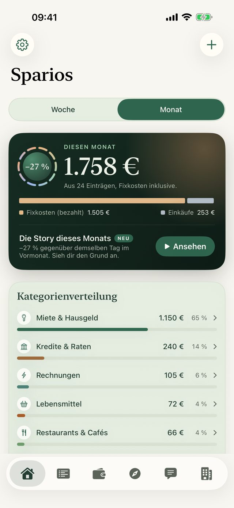
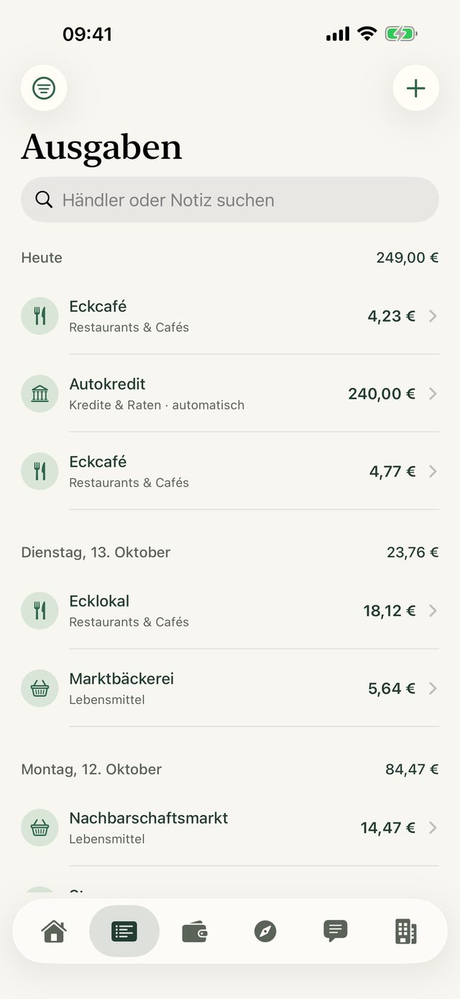
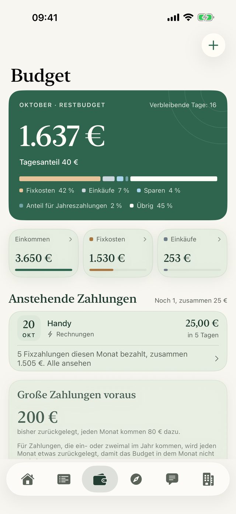
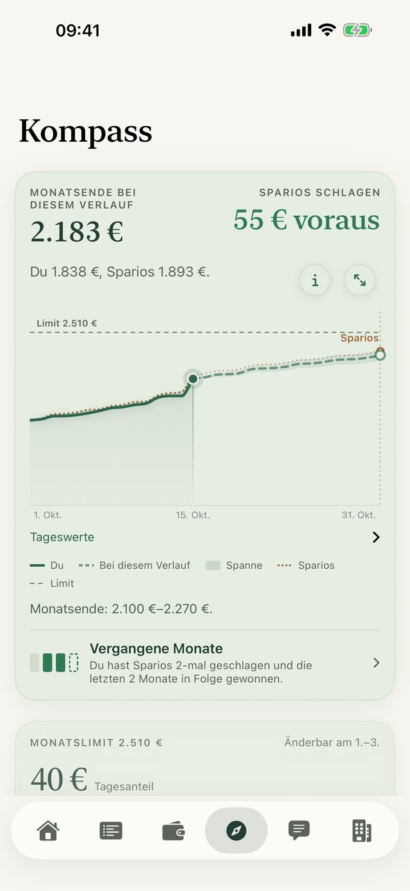
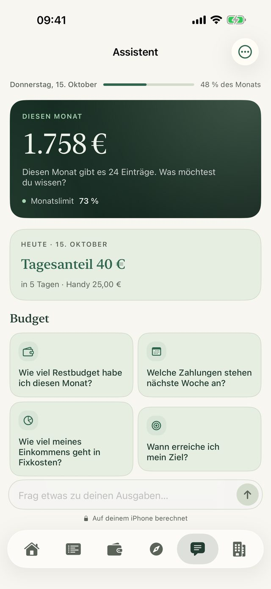
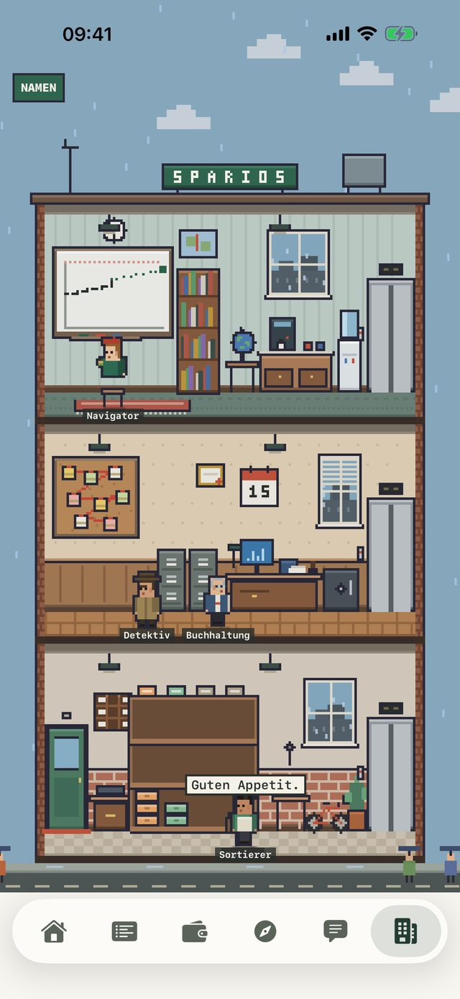

Bezahlen.
Sparios schreibt mit.
Ein Ausgabenbuch, das sich selbst füllt. Zahl mit jeder Karte aus deinem Wallet und sieh, was diesen Monat übrig ist. Kein Bank-Login, kein Konto, nichts verlässt dein iPhone.
Bald im App Store
Jede Zahlung, schon eingetragen
Richte einmal eine Kurzbefehle-Automation ein, und jede Apple-Pay-Zahlung landet Sekunden später in Sparios, mit Händler und Betrag. Miete, Rechnungen und Bargeld stehen in derselben Liste.

Wissen, was übrig ist
Trag dein Einkommen einmal ein. Miete, Abos und Raten werden an ihrem Tag gebucht, und Sparios zeigt, was diesen Monat übrig ist und wie viel du pro Tag ausgeben kannst.

Das Monatsende kommen sehen
Der Kompass liest deine Gewohnheiten und zeigt, wohin dein Monat steuert. Jeden Abend zieht Sparios seine eigene Linie. Bleib darunter, und der Monat gehört dir.

Frag nach deinem Geld
„Wie viel habe ich diesen Monat für Lebensmittel ausgegeben?“ Der Assistent antwortet aus deinen eigenen Einträgen, direkt auf dem iPhone.

Ein kleines Büro erledigt alles
In Sparios arbeiten fünf Pixel-Kollegen. Der Kurier bringt die Belege des Tages, der Sortierer legt sie ab, der Navigator rechnet dein Monatsende. Tipp jemanden an und sieh, was gerade passiert.

Dein Geld bleibt bei dir.
- Kein Konto. Kein Bank-Login.
- Kein Tracking, keine Werbung, keine Datenerhebung.
- Online nur für Wechselkurse, und nur wenn du es einschaltest.
Kostenlos. Kein Abo.
Fragen? Auf der Support-Seite gibt es Antworten, oder schreib uns.